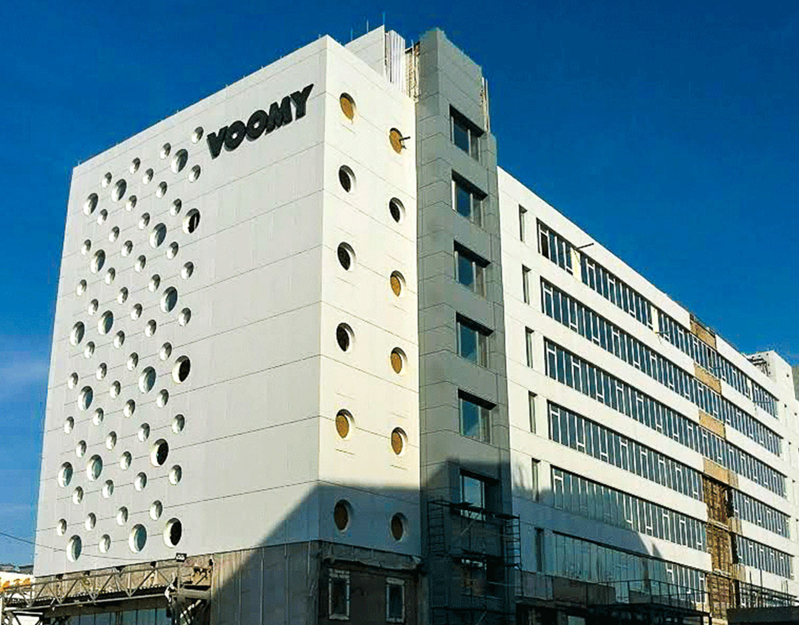
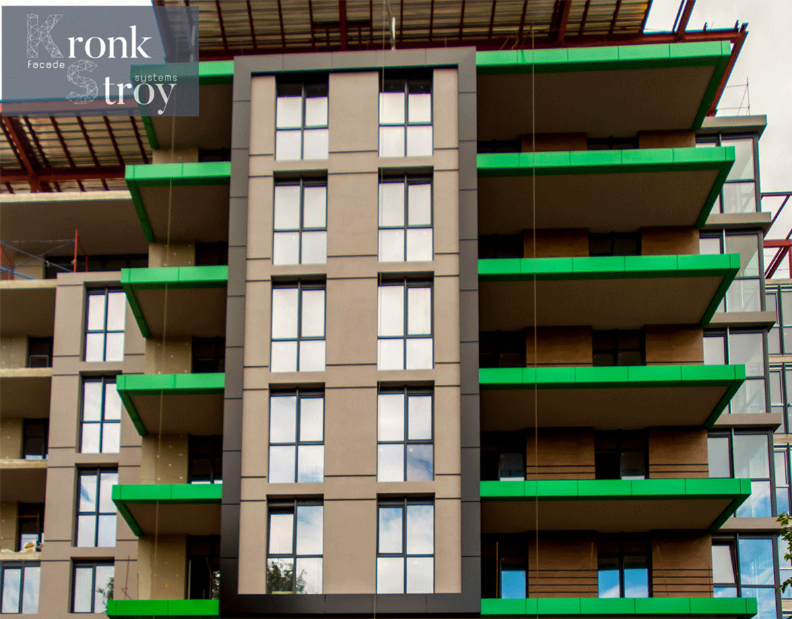

НАШІ ПРОЕКТИ
Лучше один раз увидеть и сто раз услышать, ну и хоть разок прочитать :-). Именно так мы и думаем. Стала перед нами задача написать что-то о нас. И тут нас понесло. Потом задумались, будет ли кто-то читать наши мемуары. Словом решили много не писать, а привести пару фактов из жизни нашей компании «Кронк Строй».
Организовались мы в 2013-ом году. Сразу взяли на себя обязательства сделать один очень крупный объект – “Voomy IT-Park” в городе Харьков. Поначалу относились к нам даже очень скептически. Еще бы. Все ожидали, что мы привезем сейчас 30-50 человек и начнем работать.
Но уж точно никто и подумать не мог, что на объект выйдет 10 человек. Да, мы не обманываем, именно 10 рабочих человек. При чем 6 из них вышли выполнять работы по фасадной части и 4 человека занимались остеклением здания. Глядя на объект можно подумать, что 10 человек – это нереально.

Но сложности нас не пугают. Да и опыт работы показывал, что больше людей только создадут больший беспорядок. В общем, принялись мы за работу, спасибо за полное доверие инвестору, и «вуаля», спустя 6 месяцев объект готов к запуску.
Да именно полгода на основные работы. Жаль, конечно, что пока “Voomy IT-Park” пока так и не введен в эксплуатацию, но мы надеемся, что в ближайшем будущем сложившаяся ситуация улучшится и мы все таки попадем на открытие этого интересного IT-центра. Более подробно о данном проекте, и не только об этом, можно почитать да и посмотреть фото на вкладке «Проекты».
Как говорится дальше больше и интересней. Благодаря скорости и качеству выполненной работы, у нас начали появляться новые, не менее интересные и крупные объекты. С частью наших работ можно ознакомиться в уже вышеупомянутом разделе «Проекты». Все наши работы мы просто не смогли собрать по причине того, что в свое время не собирали фото объектов, а теперь до многих просто физически нет возможности добраться, но со временем мы исправимся.

Нас выбирают многие клиенты за подход к делу. Если кому-то хочется быстро качественно и без лишних переделок получить готовое решение по оформлению фасадной части здания или как в случае магазина свежих морепродуктов “Ocean Fish” внутренней его отделки – обращайтесь. С большим удовольствием решим поставленные перед нами задачи. Кстати говоря, работы по вышеупомянутому магазину мы сделали за 7 рабочих дней, при том, что 3 дня из них мы ждали материал. Качество работы можете оценить сами, сходив на закупки качественных морепродуктов или суши, ролов. Вот так незамысловато, заодно и магазин прорекламировали.
На все виды оказанных нами услуг и проделанных нами работ компания «Кронк Строй» дает гарантию 5 лет. Гарантия включает в себя и гарантийное обслуживание и обсуждается с каждым клиентом индивидуально. Так же мы работаем с многими заводами производителями материалов, что дает Вам возможность не заморачиваться над их покупкой. Потому как зачастую, предоставляемые нами цены выглядят интересней тех, которые могут предложить Вам. Это связанно с тем, что материала мы покупаем много и часто, а соответственно и цены у нас как у оптовых покупателей. А опт всегда дешевле розницы. Да и гарантийные обязательства со своим материалом соблюдать легче. Но это ни в коем случае не означает, что мы не будем работать с материалом заказчика. Наоборот – с большим удовольствием.
Но уж точно никто и подумать не мог, что на объект выйдет 10 человек. Да, мы не обманываем, именно 10 рабочих человек. При чем 6 из них вышли выполнять работы по фасадной части и 4 человека занимались остеклением здания. Глядя на объект можно подумать, что 10 человек – это нереально.
